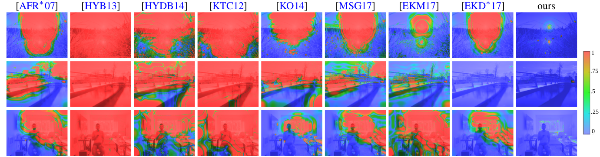

Reconfigurable Snapshot HDR Imaging Using
Coded Masks and Inception Network
Masheal Alghamdi, Qiang Fu, Ali Thabet, Wolfgang Heidrich
Accepted to the 24th International Symposium on Vision, Modeling and Visualization (VMV 2019).
Overview of the proposed HDR imaging system. In hardware a binary optical mask is placed near the image sensor to achieve spatially
varying exposures (top left). In reconstruction we first devise a casual one-time calibration network to accurately estimate the mask
(bottom left), and then input the raw noisy color filter array (CFA) image and estimated mask to our HDR reconstruction network to obtain
the final HDR image. The HDR-VDP-2 visibility probability maps for our result (right-top), blue indicates unperceivable differences,
which means that our system can recover a high quality HDR image from a single raw LDR image.
Abstract
High Dynamic Range (HDR) image acquisition from a single image capture, also known as snapshot HDR imaging, is challenging because the
bit depths of camera sensors are far from sufficient to cover the full dynamic range of the scene. Existing HDR techniques focus either
on algorithmic reconstruction or hardware modification to extend the dynamic range. In this paper we propose a joint design for snapshot
HDR imaging by devising a spatially-varying modulation mask in the hardware as well as building an inception network to reconstruct the
HDR image. We achieve a reconfigurable HDR camera design that does not require custom sensors, and instead can be reconfigured between
HDR and conventional mode with very simple calibration steps. We demonstrate that the proposed hardware-software solution offers a
flexible yet robust way to modulating per-pixel exposures, and the network requires little knowledge of the hardware to faithfully
reconstruct the HDR image. Comparison results show that our method outperforms state of the art in terms of visual perception quality.
Main results

Simulation results for two scenes. Left is the tone-mapped HDR images for our results. Zoom-in images show the comparison with the ground
truth images. The HDR-VDP2 results show that the overall visual differences are suppressed. The log2(luminance)
maps indicate our method can achieve more than 16 stops in dynamic range.

Simulation HDR reconstruction comparison with conventional iTMO algorithm using HDR-VDP-2. Note how our approach reconstructs real scene
information. Conversely, iTMO algorithms are "inventing" information in saturated and underexposed regions instead of
reconstructing what was actually there.
Experimental results with our prototype. Left are raw Bayer images from the camera. The reconstructed HDR images (tone-mapped) are shown
with zoom-in details for both low and high exposures indicating the dynamic range. Right are the log2(luminance)
maps showing the stop scales.
Paper and supplementary
Paper [Paper]
Supplementary [Supplementary]